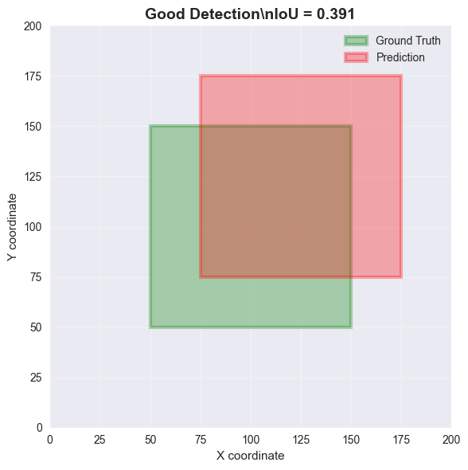
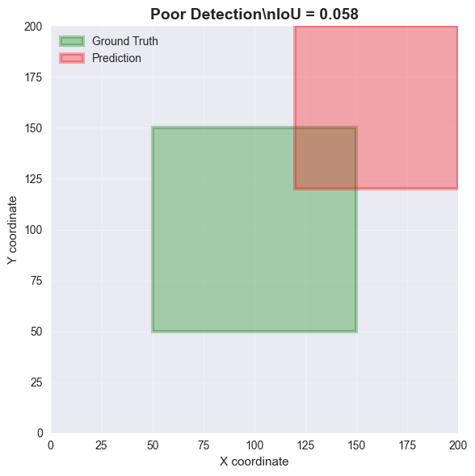
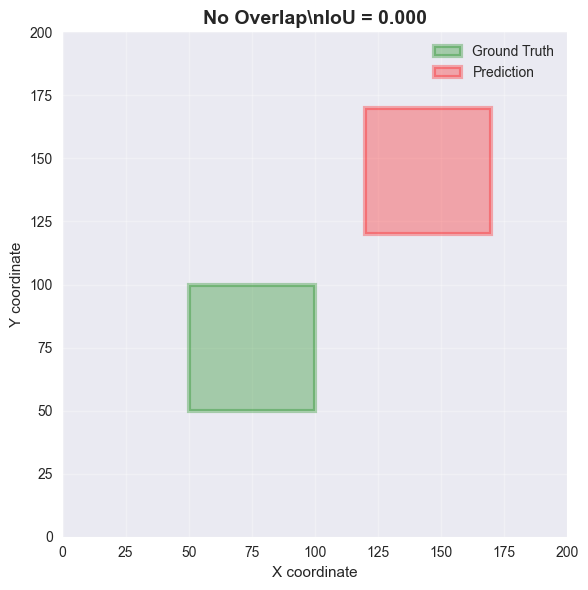
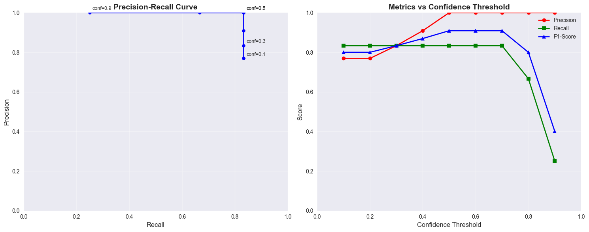
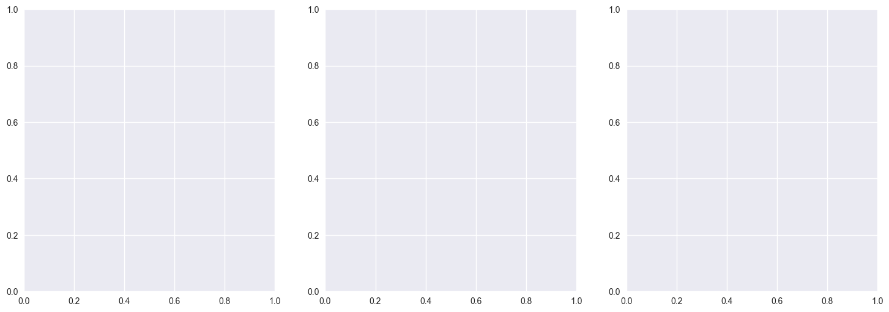
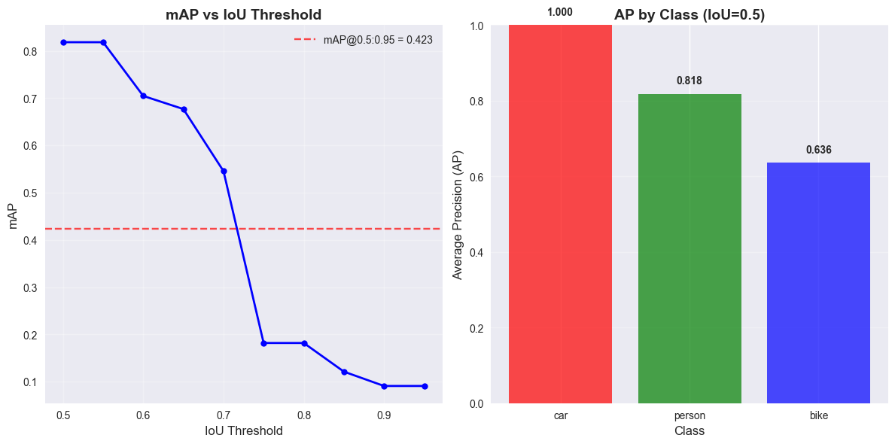
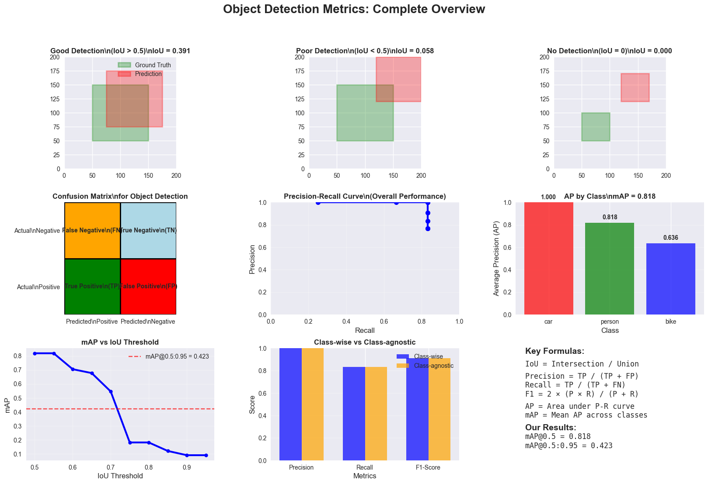

def visualize_iou_example(box1, box2, title): """Visualize two boxes and their IoU""" fig, ax = plt.subplots(1, 1, figsize=(8, 6)) x1_1, y1_1, x2_1, y2_1 = box1 x1_2, y1_2, x2_2, y2_2 = box2 # Draw first box (ground truth) rect1 = Rectangle((x1_1, y1_1), x2_1-x1_1, y2_1-y1_1, linewidth=3, edgecolor='green', facecolor='green', alpha=0.3, label='Ground Truth') ax.add_patch(rect1) # Draw second box (prediction) rect2 = Rectangle((x1_2, y1_2), x2_2-x1_2, y2_2-y1_2, linewidth=3, edgecolor='red', facecolor='red', alpha=0.3, label='Prediction') ax.add_patch(rect2) # Calculate and show intersection if exists x1_inter = max(x1_1, x1_2) y1_inter = max(y1_1, y1_2) x2_inter = min(x2_1, x2_2) y2_inter = min(y2_1, y2_2) if x2_inter > x1_inter and y2_inter > y1_inter: rect_inter = Rectangle((x1_inter, y1_inter), x2_inter-x1_inter, y2_inter-y1_inter, linewidth=2, edgecolor='blue', facecolor='blue', alpha=0.6, label='Intersection') ax.add_patch(rect_inter) iou = calculate_iou(box1, box2) ax.set_xlim(-5, max(x2_1, x2_2) + 5) ax.set_ylim(-5, max(y2_1, y2_2) + 5) ax.set_aspect('equal') ax.legend() ax.grid(True, alpha=0.3) ax.set_title(f'{title}\\nIoU = {iou:.3f}', fontsize=14, fontweight='bold') # Add interpretation if iou >= 0.7: interpretation = "🟢 Excellent" elif iou >= 0.5: interpretation = "🟡 Good" elif iou > 0: interpretation = "🟠 Poor" else: interpretation = "🔴 No overlap" ax.text(0.02, 0.98, interpretation, transform=ax.transAxes, fontsize=12, verticalalignment='top', bbox=dict(boxstyle="round,pad=0.3", facecolor='white', alpha=0.8)) plt.tight_layout() plt.show()# Show different IoU scenariosprint("Examples of different IoU values:\\n")print("1️⃣ HIGH IoU (Excellent detection):")visualize_iou_example([10, 10, 50, 30], [12, 12, 48, 28], "High IoU")print("\\n2️⃣ MEDIUM IoU (Okay detection):")visualize_iou_example([10, 10, 50, 30], [20, 15, 60, 35], "Medium IoU")print("\\n3️⃣ LOW IoU (Poor detection):")visualize_iou_example([10, 10, 50, 30], [30, 25, 70, 45], "Low IoU")print("\\n4️⃣ ZERO IoU (Completely missed):")visualize_iou_example([10, 10, 30, 30], [50, 50, 70, 70], "No Overlap")Visualizing Different IoU ValuesLet’s see what different IoU values look like visually:
def calculate_iou(box1, box2): """ Calculate IoU between two bounding boxes. Args: box1, box2: [x1, y1, x2, y2] format Returns: iou: Intersection over Union value (0 to 1) """ # Extract coordinates x1_1, y1_1, x2_1, y2_1 = box1 x1_2, y1_2, x2_2, y2_2 = box2 # Calculate intersection rectangle x1_inter = max(x1_1, x1_2) # Left edge of intersection y1_inter = max(y1_1, y1_2) # Top edge of intersection x2_inter = min(x2_1, x2_2) # Right edge of intersection y2_inter = min(y2_1, y2_2) # Bottom edge of intersection # Check if there's any intersection if x2_inter < x1_inter or y2_inter < y1_inter: return 0.0 # No intersection # Calculate areas intersection_area = (x2_inter - x1_inter) * (y2_inter - y1_inter) area1 = (x2_1 - x1_1) * (y2_1 - y1_1) area2 = (x2_2 - x1_2) * (y2_2 - y1_2) union_area = area1 + area2 - intersection_area # Calculate IoU iou = intersection_area / union_area if union_area > 0 else 0.0 return iou# Let's test with a concrete example from our datagt_box = [10, 10, 50, 30] # Ground truth car in image_1pred_box = [12, 12, 48, 28] # Our prediction for that cariou = calculate_iou(gt_box, pred_box)print(f"🔍 EXAMPLE CALCULATION:")print(f"Ground truth box: {gt_box}")print(f"Prediction box: {pred_box}")print(f"IoU: {iou:.3f}")# Let's show the math step by stepx1_1, y1_1, x2_1, y2_1 = gt_boxx1_2, y1_2, x2_2, y2_2 = pred_boxprint(f"\\n📐 STEP-BY-STEP CALCULATION:")print(f"1. GT box area: ({x2_1}-{x1_1}) × ({y2_1}-{y1_1}) = {(x2_1-x1_1) * (y2_1-y1_1)}")print(f"2. Pred box area: ({x2_2}-{x1_2}) × ({y2_2}-{y1_2}) = {(x2_2-x1_2) * (y2_2-y1_2)}")x1_inter = max(x1_1, x1_2)y1_inter = max(y1_1, y1_2)x2_inter = min(x2_1, x2_2)y2_inter = min(y2_1, y2_2)intersection_area = (x2_inter - x1_inter) * (y2_inter - y1_inter)print(f"3. Intersection area: ({x2_inter}-{x1_inter}) × ({y2_inter}-{y1_inter}) = {intersection_area}")union_area = (x2_1-x1_1)*(y2_1-y1_1) + (x2_2-x1_2)*(y2_2-y1_2) - intersection_areaprint(f"4. Union area: {(x2_1-x1_1)*(y2_1-y1_1)} + {(x2_2-x1_2)*(y2_2-y1_2)} - {intersection_area} = {union_area}")print(f"5. IoU: {intersection_area}/{union_area} = {intersection_area/union_area:.3f}")print(f"\\n✅ This is a GOOD detection because IoU = {iou:.3f} > 0.5")Step 2: Understanding IoU (Intersection over Union)IoU is the most important concept in object detection evaluation. It measures how much two bounding boxes overlap.Why do we need IoU?- A perfect detection doesn’t need to have exactly the same coordinates as ground truth- We need a way to measure “close enough”- IoU gives us a score from 0 (no overlap) to 1 (perfect overlap)Formula: IoU = (Area of Intersection) / (Area of Union)
def visualize_image(img_id, ground_truth, predictions, confidence_threshold=0.0): """Visualize ground truth and predictions for one image""" fig, ax = plt.subplots(1, 1, figsize=(10, 8)) # Set image bounds (simulating a 100x100 image) ax.set_xlim(0, 100) ax.set_ylim(0, 100) ax.set_aspect('equal') ax.invert_yaxis() # Invert y-axis to match image coordinates (0,0 at top-left) # Draw ground truth boxes in green gt_objects = ground_truth[img_id] for i, obj in enumerate(gt_objects): x1, y1, x2, y2 = obj['bbox'] width = x2 - x1 height = y2 - y1 rect = Rectangle((x1, y1), width, height, linewidth=3, edgecolor='green', facecolor='none', label='Ground Truth' if i == 0 else """) ax.add_patch(rect) # Add label ax.text(x1, y1-2, f"GT: {obj['class']}", bbox=dict(boxstyle="round,pad=0.2", facecolor='lightgreen'), fontsize=10, fontweight='bold') # Draw prediction boxes in red pred_objects = [p for p in predictions[img_id] if p['confidence'] >= confidence_threshold] for i, obj in enumerate(pred_objects): x1, y1, x2, y2 = obj['bbox'] width = x2 - x1 height = y2 - y1 rect = Rectangle((x1, y1), width, height, linewidth=2, edgecolor='red', facecolor='none', linestyle='--', label='Predictions' if i == 0 else "") ax.add_patch(rect) # Add label ax.text(x2, y2+2, f"Pred: {obj['class']}\\n{obj['confidence']:.2f}", bbox=dict(boxstyle="round,pad=0.2", facecolor='lightcoral'), fontsize=10) ax.set_title(f'{img_id.replace("_", " ").title()} - Ground Truth vs Predictions', fontsize=14, fontweight='bold') ax.legend(loc='upper right') ax.grid(True, alpha=0.3) ax.set_xlabel('X coordinate') ax.set_ylabel('Y coordinate') plt.tight_layout() plt.show()# Visualize our two imagesprint("📸 IMAGE 1:")visualize_image('image_1', ground_truth, predictions)print("\\n📸 IMAGE 2:")visualize_image('image_2', ground_truth, predictions)Let’s Visualize Our DatasetBefore diving into metrics, let’s see what our data looks like.
—author: Nipun Batrabadges: truecategories:- ML, CVdate: ’2025-08-04’description: Object Detection Metrics Tutorial - Step by Steptitle: Object Detection Metrics - A Step-by-Step Guidetoc: true—
Object Detection Metrics: A Step-by-Step TutorialObject detection is more complex than image classification because we need to evaluate two things:1. Where are the objects? (localization)2. What are the objects? (classification)In this tutorial, we’ll build understanding step by step using a minimal, realistic example.## Why This Tutorial is Different- Minimal dataset: Just 2 images, 2 classes to keep things crystal clear- Step-by-step: Each concept builds on the previous one- Realistic examples: Real-world scenarios with mistakes and edge cases- Visual explanations: See exactly what happens at each step
SetupLet’s import what we need and set up our environment.
import numpy as npimport matplotlib.pyplot as pltimport matplotlib.patches as patchesfrom matplotlib.patches import Rectangleimport pandas as pd# Set up plottingplt.rcParams['figure.figsize'] = (10, 6)plt.rcParams['font.size'] = 12np.random.seed(42)Step 1: Our Minimal, Realistic DatasetLet’s start with just 2 images and 2 classes (car, person) to keep things simple and understandable.Think of this as a parking lot security camera that needs to detect cars and people.
# Our simple dataset: 2 images, 2 classesclasses = ['car', 'person']# Ground truth: what's actually in each image# Bounding boxes are [x1, y1, x2, y2] where (x1,y1) is top-left, (x2,y2) is bottom-rightground_truth = { 'image_1': [ {'bbox': [10, 10, 50, 30], 'class': 'car'}, # One car {'bbox': [60, 20, 80, 60], 'class': 'person'} # One person ], 'image_2': [ {'bbox': [15, 15, 45, 35], 'class': 'car'} # One car ]}# Model predictions: what our model thinks it sees# Note: Real models make mistakes!predictions = { 'image_1': [ {'bbox': [12, 12, 48, 28], 'class': 'car', 'confidence': 0.9}, # Good car detection {'bbox': [65, 25, 85, 65], 'class': 'person', 'confidence': 0.8}, # Good person detection {'bbox': [20, 70, 40, 90], 'class': 'car', 'confidence': 0.3} # False detection (no car here!) ], 'image_2': [ {'bbox': [10, 10, 40, 30], 'class': 'car', 'confidence': 0.85} # Good car detection ]}print("🎯 GROUND TRUTH (what's actually there):")for img_id, objects in ground_truth.items(): print(f" {img_id}: {len(objects)} objects") for obj in objects: print(f" - {obj['class']} at {obj['bbox']}")print("\n🤖 MODEL PREDICTIONS (what our model thinks):")for img_id, objects in predictions.items(): print(f" {img_id}: {len(objects)} predictions") for obj in objects: print(f" - {obj['class']} at {obj['bbox']} (confidence: {obj['confidence']:.1f})")print("\n💡 Notice: The model made 1 extra prediction in image_1 - this will be important later!")Visualizing IoU
Let’s create a function to visualize how IoU works with different overlaps.
def visualize_iou(box1, box2, title=""):
"""Visualize two bounding boxes and their IoU"""
fig, ax = plt.subplots(1, 1, figsize=(8, 6))
# Draw ground truth box (green)
rect1 = Rectangle((box1[0], box1[1]), box1[2]-box1[0], box1[3]-box1[1],
linewidth=3, edgecolor='green', facecolor='green', alpha=0.3, label='Ground Truth')
ax.add_patch(rect1)
# Draw prediction box (red)
rect2 = Rectangle((box2[0], box2[1]), box2[2]-box2[0], box2[3]-box2[1],
linewidth=3, edgecolor='red', facecolor='red', alpha=0.3, label='Prediction')
ax.add_patch(rect2)
# Calculate and display IoU
iou = calculate_iou(box1, box2)
# Set plot properties
ax.set_xlim(0, 200)
ax.set_ylim(0, 200)
ax.set_aspect('equal')
ax.legend()
ax.grid(True, alpha=0.3)
ax.set_title(f'{title}\\nIoU = {iou:.3f}', fontsize=14, fontweight='bold')
ax.set_xlabel('X coordinate')
ax.set_ylabel('Y coordinate')
plt.tight_layout()
plt.show()
# Example 1: Good overlap (IoU > 0.5)
print("Example 1: Good Detection (IoU > 0.5)")
visualize_iou([50, 50, 150, 150], [75, 75, 175, 175], "Good Detection")Example 1: Good Detection (IoU > 0.5)
# Example 2: Poor overlap (IoU < 0.5)
print("Example 2: Poor Detection (IoU < 0.5)")
visualize_iou([50, 50, 150, 150], [120, 120, 200, 200], "Poor Detection")
# Example 3: No overlap (IoU = 0)
print("Example 3: No Detection (IoU = 0)")
visualize_iou([50, 50, 100, 100], [120, 120, 170, 170], "No Overlap")Example 2: Poor Detection (IoU < 0.5)
Example 3: No Detection (IoU = 0)
2. Creating a Simple 3-Class Detection Dataset
Let’s create a synthetic dataset with 3 classes: car, person, and bike. We’ll simulate both ground truth annotations and model predictions.
# Define our classes
classes = ['car', 'person', 'bike']
class_to_id = {cls: i for i, cls in enumerate(classes)}
id_to_class = {i: cls for i, cls in enumerate(classes)}
print("Class mapping:")
for cls, id in class_to_id.items():
print(f"{cls}: {id}")
# Create ground truth data for 5 images
ground_truth = {
'image_1': [
{'bbox': [20, 30, 120, 80], 'class': 'car', 'class_id': 0},
{'bbox': [150, 50, 180, 120], 'class': 'person', 'class_id': 1}
],
'image_2': [
{'bbox': [10, 10, 90, 60], 'class': 'bike', 'class_id': 2},
{'bbox': [100, 40, 200, 90], 'class': 'car', 'class_id': 0},
{'bbox': [220, 30, 250, 100], 'class': 'person', 'class_id': 1}
],
'image_3': [
{'bbox': [50, 50, 150, 100], 'class': 'car', 'class_id': 0}
],
'image_4': [
{'bbox': [30, 20, 60, 80], 'class': 'person', 'class_id': 1},
{'bbox': [80, 30, 110, 70], 'class': 'person', 'class_id': 1},
{'bbox': [130, 40, 180, 90], 'class': 'bike', 'class_id': 2}
],
'image_5': [
{'bbox': [40, 40, 140, 90], 'class': 'car', 'class_id': 0},
{'bbox': [160, 60, 190, 130], 'class': 'person', 'class_id': 1},
{'bbox': [200, 20, 230, 60], 'class': 'bike', 'class_id': 2}
]
}
print(f"\\nGround truth created for {len(ground_truth)} images")
for img_id, annotations in ground_truth.items():
print(f"{img_id}: {len(annotations)} objects")Class mapping:
car: 0
person: 1
bike: 2
\nGround truth created for 5 images
image_1: 2 objects
image_2: 3 objects
image_3: 1 objects
image_4: 3 objects
image_5: 3 objects# Create model predictions (with confidence scores)
# Note: Real models make mistakes - some predictions may be wrong or miss objects
predictions = {
'image_1': [
{'bbox': [25, 35, 115, 85], 'class': 'car', 'class_id': 0, 'confidence': 0.9},
{'bbox': [145, 45, 185, 115], 'class': 'person', 'class_id': 1, 'confidence': 0.8},
{'bbox': [60, 10, 90, 40], 'class': 'bike', 'class_id': 2, 'confidence': 0.3} # False positive
],
'image_2': [
{'bbox': [15, 15, 85, 65], 'class': 'bike', 'class_id': 2, 'confidence': 0.85},
{'bbox': [105, 45, 195, 95], 'class': 'car', 'class_id': 0, 'confidence': 0.92},
# Missing the person detection (False Negative)
],
'image_3': [
{'bbox': [45, 55, 145, 105], 'class': 'car', 'class_id': 0, 'confidence': 0.88}
],
'image_4': [
{'bbox': [35, 25, 65, 75], 'class': 'person', 'class_id': 1, 'confidence': 0.75},
{'bbox': [85, 35, 115, 75], 'class': 'person', 'class_id': 1, 'confidence': 0.82},
{'bbox': [135, 45, 175, 95], 'class': 'bike', 'class_id': 2, 'confidence': 0.77},
{'bbox': [200, 200, 230, 240], 'class': 'car', 'class_id': 0, 'confidence': 0.4} # False positive
],
'image_5': [
{'bbox': [42, 42, 138, 88], 'class': 'car', 'class_id': 0, 'confidence': 0.91},
{'bbox': [158, 58, 192, 128], 'class': 'person', 'class_id': 1, 'confidence': 0.86},
# Missing the bike detection (False Negative)
{'bbox': [10, 10, 40, 50], 'class': 'person', 'class_id': 1, 'confidence': 0.35} # False positive
]
}
print("Model predictions created")
for img_id, preds in predictions.items():
print(f"{img_id}: {len(preds)} predictions")Model predictions created
image_1: 3 predictions
image_2: 2 predictions
image_3: 1 predictions
image_4: 4 predictions
image_5: 3 predictions3. Understanding Confidence Scores and Thresholds
Confidence scores indicate how certain the model is about each prediction. Higher scores mean more confidence.
Key concepts: - Confidence threshold: We only consider predictions above this threshold - True Positive (TP): Correct detection (IoU ≥ threshold AND correct class) - False Positive (FP): Incorrect detection (IoU < threshold OR wrong class) - False Negative (FN): Missed ground truth object
def evaluate_predictions(ground_truth, predictions, confidence_threshold=0.5, iou_threshold=0.5):
"""
Evaluate predictions against ground truth.
Returns:
results: Dict with TP, FP, FN counts per class and overall
"""
results = {
'per_class': {cls: {'TP': 0, 'FP': 0, 'FN': 0} for cls in classes},
'overall': {'TP': 0, 'FP': 0, 'FN': 0}
}
for img_id in ground_truth.keys():
gt_boxes = ground_truth[img_id]
pred_boxes = [p for p in predictions.get(img_id, []) if p['confidence'] >= confidence_threshold]
# Track which ground truth boxes have been matched
gt_matched = [False] * len(gt_boxes)
# Process each prediction
for pred in pred_boxes:
best_iou = 0
best_gt_idx = -1
# Find best matching ground truth box
for gt_idx, gt in enumerate(gt_boxes):
if gt['class_id'] == pred['class_id']: # Same class
iou = calculate_iou(pred['bbox'], gt['bbox'])
if iou > best_iou:
best_iou = iou
best_gt_idx = gt_idx
# Determine if this is TP or FP
if best_iou >= iou_threshold and not gt_matched[best_gt_idx]:
# True Positive
results['per_class'][pred['class']]['TP'] += 1
results['overall']['TP'] += 1
gt_matched[best_gt_idx] = True
else:
# False Positive
results['per_class'][pred['class']]['FP'] += 1
results['overall']['FP'] += 1
# Count False Negatives (unmatched ground truth boxes)
for gt_idx, matched in enumerate(gt_matched):
if not matched:
gt_class = gt_boxes[gt_idx]['class']
results['per_class'][gt_class]['FN'] += 1
results['overall']['FN'] += 1
return results
# Evaluate with different confidence thresholds
thresholds = [0.3, 0.5, 0.7, 0.9]
print("Evaluation Results at Different Confidence Thresholds:")
print("=" * 60)
for conf_thresh in thresholds:
results = evaluate_predictions(ground_truth, predictions, confidence_threshold=conf_thresh)
print(f"\\nConfidence Threshold: {conf_thresh}")
print(f"Overall - TP: {results['overall']['TP']}, FP: {results['overall']['FP']}, FN: {results['overall']['FN']}")Evaluation Results at Different Confidence Thresholds:
============================================================
\nConfidence Threshold: 0.3
Overall - TP: 10, FP: 3, FN: 2
\nConfidence Threshold: 0.5
Overall - TP: 10, FP: 0, FN: 2
\nConfidence Threshold: 0.7
Overall - TP: 10, FP: 0, FN: 2
\nConfidence Threshold: 0.9
Overall - TP: 3, FP: 0, FN: 94. Precision and Recall
Precision and Recall are fundamental metrics for understanding model performance:
- Precision = TP / (TP + FP) → “Of all predictions, how many were correct?”
- Recall = TP / (TP + FN) → “Of all ground truth objects, how many did we detect?”
Trade-off: Higher confidence threshold → Higher precision, Lower recall
def calculate_precision_recall(tp, fp, fn):
"""Calculate precision and recall from TP, FP, FN counts"""
precision = tp / (tp + fp) if (tp + fp) > 0 else 0
recall = tp / (tp + fn) if (tp + fn) > 0 else 0
return precision, recall
# Calculate precision-recall for different confidence thresholds
conf_thresholds = np.arange(0.1, 1.0, 0.1)
precision_recall_data = []
print("Precision-Recall Analysis:")
print("=" * 50)
print(f"{'Confidence':<12} {'Precision':<12} {'Recall':<12} {'F1-Score':<12}")
print("-" * 50)
for conf_thresh in conf_thresholds:
results = evaluate_predictions(ground_truth, predictions, confidence_threshold=conf_thresh)
tp = results['overall']['TP']
fp = results['overall']['FP']
fn = results['overall']['FN']
precision, recall = calculate_precision_recall(tp, fp, fn)
f1_score = 2 * (precision * recall) / (precision + recall) if (precision + recall) > 0 else 0
precision_recall_data.append({
'confidence': conf_thresh,
'precision': precision,
'recall': recall,
'f1_score': f1_score
})
print(f"{conf_thresh:<12.1f} {precision:<12.3f} {recall:<12.3f} {f1_score:<12.3f}")
# Convert to DataFrame for easier manipulation
pr_df = pd.DataFrame(precision_recall_data)Precision-Recall Analysis:
==================================================
Confidence Precision Recall F1-Score
--------------------------------------------------
0.1 0.769 0.833 0.800
0.2 0.769 0.833 0.800
0.3 0.833 0.833 0.833
0.4 0.909 0.833 0.870
0.5 1.000 0.833 0.909
0.6 1.000 0.833 0.909
0.7 1.000 0.833 0.909
0.8 1.000 0.667 0.800
0.9 1.000 0.250 0.400 # Plot Precision-Recall Curve
fig, (ax1, ax2) = plt.subplots(1, 2, figsize=(15, 6))
# Plot 1: Precision-Recall Curve
ax1.plot(pr_df['recall'], pr_df['precision'], 'b-o', linewidth=2, markersize=6)
ax1.set_xlabel('Recall', fontsize=12)
ax1.set_ylabel('Precision', fontsize=12)
ax1.set_title('Precision-Recall Curve', fontsize=14, fontweight='bold')
ax1.grid(True, alpha=0.3)
ax1.set_xlim(0, 1)
ax1.set_ylim(0, 1)
# Add annotations for key points
for i, row in pr_df.iterrows():
if i % 2 == 0: # Annotate every other point to avoid crowding
ax1.annotate(f'conf={row["confidence"]:.1f}',
(row['recall'], row['precision']),
xytext=(5, 5), textcoords='offset points', fontsize=9)
# Plot 2: Precision, Recall, and F1 vs Confidence
ax2.plot(pr_df['confidence'], pr_df['precision'], 'r-o', label='Precision', linewidth=2)
ax2.plot(pr_df['confidence'], pr_df['recall'], 'g-s', label='Recall', linewidth=2)
ax2.plot(pr_df['confidence'], pr_df['f1_score'], 'b-^', label='F1-Score', linewidth=2)
ax2.set_xlabel('Confidence Threshold', fontsize=12)
ax2.set_ylabel('Score', fontsize=12)
ax2.set_title('Metrics vs Confidence Threshold', fontsize=14, fontweight='bold')
ax2.legend()
ax2.grid(True, alpha=0.3)
ax2.set_xlim(0, 1)
ax2.set_ylim(0, 1)
plt.tight_layout()
plt.show()
5. Mean Average Precision (mAP)
mAP is the gold standard metric for object detection evaluation.
Key concepts: - Average Precision (AP): Area under the Precision-Recall curve for one class - mAP: Mean of AP across all classes - mAP@0.5: mAP calculated with IoU threshold = 0.5 - mAP@0.5:0.95: mAP averaged over IoU thresholds from 0.5 to 0.95 (COCO style)
Steps to calculate AP: 1. Sort predictions by confidence (descending) 2. Calculate precision and recall at each confidence level 3. Compute area under the Precision-Recall curve
def calculate_ap(ground_truth, predictions, class_id, iou_threshold=0.5):
"""
Calculate Average Precision for a single class.
"""
# Collect all predictions for this class across all images
all_predictions = []
total_gt_objects = 0
for img_id in ground_truth.keys():
# Count ground truth objects for this class
gt_objects = [gt for gt in ground_truth[img_id] if gt['class_id'] == class_id]
total_gt_objects += len(gt_objects)
# Collect predictions for this class
img_predictions = predictions.get(img_id, [])
for pred in img_predictions:
if pred['class_id'] == class_id:
all_predictions.append({
'confidence': pred['confidence'],
'bbox': pred['bbox'],
'image_id': img_id
})
if total_gt_objects == 0:
return 0.0 # No ground truth objects for this class
# Sort predictions by confidence (descending)
all_predictions.sort(key=lambda x: x['confidence'], reverse=True)
# Calculate precision and recall at each threshold
tp_cumsum = 0
fp_cumsum = 0
precisions = []
recalls = []
# Track which ground truth objects have been matched
gt_matched = {img_id: [False] * len([gt for gt in ground_truth[img_id] if gt['class_id'] == class_id])
for img_id in ground_truth.keys()}
for pred in all_predictions:
img_id = pred['image_id']
gt_objects = [gt for gt in ground_truth[img_id] if gt['class_id'] == class_id]
# Find best matching ground truth object
best_iou = 0
best_gt_idx = -1
for gt_idx, gt in enumerate(gt_objects):
iou = calculate_iou(pred['bbox'], gt['bbox'])
if iou > best_iou:
best_iou = iou
best_gt_idx = gt_idx
# Determine if this is TP or FP
if best_iou >= iou_threshold and not gt_matched[img_id][best_gt_idx]:
tp_cumsum += 1
gt_matched[img_id][best_gt_idx] = True
else:
fp_cumsum += 1
# Calculate precision and recall
precision = tp_cumsum / (tp_cumsum + fp_cumsum)
recall = tp_cumsum / total_gt_objects
precisions.append(precision)
recalls.append(recall)
# Add point (0, 1) at the beginning if we have predictions
if len(precisions) > 0:
precisions = [1.0] + precisions
recalls = [0.0] + recalls
# Calculate AP using the 11-point interpolation method
ap = 0.0
for t in np.arange(0, 1.1, 0.1):
# Find precision at recall >= t
p_interp = 0
for i, r in enumerate(recalls):
if r >= t:
p_interp = max(p_interp, precisions[i])
ap += p_interp / 11.0
return ap, precisions, recalls
# Calculate AP for each class
ap_results = {}
for class_name in classes:
class_id = class_to_id[class_name]
ap, precisions, recalls = calculate_ap(ground_truth, predictions, class_id, iou_threshold=0.5)
ap_results[class_name] = {'ap': ap, 'precisions': precisions, 'recalls': recalls}
print(f"AP for {class_name}: {ap:.3f}")
# Calculate mAP
map_score = np.mean([ap_results[cls]['ap'] for cls in classes])
print(f"\\nmAP@0.5: {map_score:.3f}")AP for car: 1.000
AP for person: 0.818
AP for bike: 0.636
\nmAP@0.5: 0.818# Visualize Precision-Recall curves for each class
fig, axes = plt.subplots(1, 3, figsize=(18, 6))
colors = ['red', 'green', 'blue']
for i, class_name in enumerate(classes):
ax = axes[i]
precisions = ap_results[class_name]['precisions']
recalls = ap_results[class_name]['recalls']
ap = ap_results[class_name]['ap']
if len(precisions) > 0:
ax.plot(recalls, precisions, f'{colors[i]}-o', linewidth=2, markersize=4)
ax.fill_between(recalls, precisions, alpha=0.3, color=colors[i])
ax.set_xlabel('Recall', fontsize=12)
ax.set_ylabel('Precision', fontsize=12)
ax.set_title(f'{class_name.title()} - AP = {ap:.3f}', fontsize=14, fontweight='bold')
ax.grid(True, alpha=0.3)
ax.set_xlim(0, 1)
ax.set_ylim(0, 1)
plt.suptitle(f'Precision-Recall Curves by Class (mAP@0.5 = {map_score:.3f})',
fontsize=16, fontweight='bold', y=1.02)
plt.tight_layout()
plt.show()--------------------------------------------------------------------------- ValueError Traceback (most recent call last) Cell In[11], line 12 9 ap = ap_results[class_name]['ap'] 11 if len(precisions) > 0: ---> 12 ax.plot(recalls, precisions, f'{colors[i]}-o', linewidth=2, markersize=4) 13 ax.fill_between(recalls, precisions, alpha=0.3, color=colors[i]) 15 ax.set_xlabel('Recall', fontsize=12) File ~/base/lib/python3.12/site-packages/matplotlib/axes/_axes.py:1777, in Axes.plot(self, scalex, scaley, data, *args, **kwargs) 1534 """ 1535 Plot y versus x as lines and/or markers. 1536 (...) 1774 (``'green'``) or hex strings (``'#008000'``). 1775 """ 1776 kwargs = cbook.normalize_kwargs(kwargs, mlines.Line2D) -> 1777 lines = [*self._get_lines(self, *args, data=data, **kwargs)] 1778 for line in lines: 1779 self.add_line(line) File ~/base/lib/python3.12/site-packages/matplotlib/axes/_base.py:297, in _process_plot_var_args.__call__(self, axes, data, return_kwargs, *args, **kwargs) 295 this += args[0], 296 args = args[1:] --> 297 yield from self._plot_args( 298 axes, this, kwargs, ambiguous_fmt_datakey=ambiguous_fmt_datakey, 299 return_kwargs=return_kwargs 300 ) File ~/base/lib/python3.12/site-packages/matplotlib/axes/_base.py:444, in _process_plot_var_args._plot_args(self, axes, tup, kwargs, return_kwargs, ambiguous_fmt_datakey) 441 if len(tup) > 1 and isinstance(tup[-1], str): 442 # xy is tup with fmt stripped (could still be (y,) only) 443 *xy, fmt = tup --> 444 linestyle, marker, color = _process_plot_format( 445 fmt, ambiguous_fmt_datakey=ambiguous_fmt_datakey) 446 elif len(tup) == 3: 447 raise ValueError('third arg must be a format string') File ~/base/lib/python3.12/site-packages/matplotlib/axes/_base.py:192, in _process_plot_format(fmt, ambiguous_fmt_datakey) 190 i += len(cn_color[0]) 191 else: --> 192 raise ValueError(errfmt.format(fmt, f"unrecognized character {c!r}")) 194 if linestyle is None and marker is None: 195 linestyle = mpl.rcParams['lines.linestyle'] ValueError: 'red-o' is not a valid format string (unrecognized character 'e')

mAP at Different IoU Thresholds
Let’s see how mAP changes with different IoU thresholds and implement COCO-style mAP@0.5:0.95.
# Calculate mAP at different IoU thresholds
iou_thresholds = np.arange(0.5, 1.0, 0.05)
map_at_ious = []
print("mAP at Different IoU Thresholds:")
print("=" * 40)
print(f"{'IoU Threshold':<15} {'mAP':<10}")
print("-" * 40)
for iou_thresh in iou_thresholds:
class_aps = []
for class_name in classes:
class_id = class_to_id[class_name]
ap, _, _ = calculate_ap(ground_truth, predictions, class_id, iou_threshold=iou_thresh)
class_aps.append(ap)
map_score = np.mean(class_aps)
map_at_ious.append(map_score)
print(f"{iou_thresh:<15.2f} {map_score:<10.3f}")
# Calculate COCO-style mAP@0.5:0.95
coco_map = np.mean(map_at_ious)
print(f"\\nmAP@0.5:0.95 (COCO style): {coco_map:.3f}")
print(f"mAP@0.5: {map_at_ious[0]:.3f}")
print(f"mAP@0.75: {map_at_ious[5]:.3f}")mAP at Different IoU Thresholds:
========================================
IoU Threshold mAP
----------------------------------------
0.50 0.818
0.55 0.818
0.60 0.705
0.65 0.677
0.70 0.545
0.75 0.182
0.80 0.182
0.85 0.121
0.90 0.091
0.95 0.091
\nmAP@0.5:0.95 (COCO style): 0.423
mAP@0.5: 0.818
mAP@0.75: 0.182# Plot mAP vs IoU threshold
plt.figure(figsize=(12, 6))
# Plot mAP vs IoU threshold
plt.subplot(1, 2, 1)
plt.plot(iou_thresholds, map_at_ious, 'b-o', linewidth=2, markersize=6)
plt.xlabel('IoU Threshold', fontsize=12)
plt.ylabel('mAP', fontsize=12)
plt.title('mAP vs IoU Threshold', fontsize=14, fontweight='bold')
plt.grid(True, alpha=0.3)
plt.axhline(y=coco_map, color='r', linestyle='--', alpha=0.7, label=f'mAP@0.5:0.95 = {coco_map:.3f}')
plt.legend()
# Bar plot of AP by class at IoU=0.5
plt.subplot(1, 2, 2)
class_names = list(classes)
ap_values = [ap_results[cls]['ap'] for cls in class_names]
bars = plt.bar(class_names, ap_values, color=['red', 'green', 'blue'], alpha=0.7)
plt.xlabel('Class', fontsize=12)
plt.ylabel('Average Precision (AP)', fontsize=12)
plt.title('AP by Class (IoU=0.5)', fontsize=14, fontweight='bold')
plt.ylim(0, 1)
plt.grid(True, alpha=0.3, axis='y')
# Add value labels on bars
for bar, ap_val in zip(bars, ap_values):
plt.text(bar.get_x() + bar.get_width()/2, bar.get_height() + 0.02,
f'{ap_val:.3f}', ha='center', va='bottom', fontweight='bold')
plt.tight_layout()
plt.show()
6. Class-wise vs Class-agnostic Evaluation
Two different evaluation approaches:
- Class-wise (what we’ve been doing): Predictions must match both bounding box location AND class
- Class-agnostic: Only bounding box location matters, ignore class predictions
Class-agnostic evaluation helps understand if the model can detect “objects” regardless of classification accuracy.
def calculate_class_agnostic_metrics(ground_truth, predictions, iou_threshold=0.5, confidence_threshold=0.5):
"""
Calculate class-agnostic metrics (ignore class predictions)
"""
tp = 0
fp = 0
total_gt = 0
for img_id in ground_truth.keys():
gt_boxes = ground_truth[img_id]
pred_boxes = [p for p in predictions.get(img_id, []) if p['confidence'] >= confidence_threshold]
total_gt += len(gt_boxes)
# Track which ground truth boxes have been matched
gt_matched = [False] * len(gt_boxes)
# Process each prediction (ignore class)
for pred in pred_boxes:
best_iou = 0
best_gt_idx = -1
# Find best matching ground truth box (any class)
for gt_idx, gt in enumerate(gt_boxes):
iou = calculate_iou(pred['bbox'], gt['bbox'])
if iou > best_iou:
best_iou = iou
best_gt_idx = gt_idx
# Determine if this is TP or FP (class-agnostic)
if best_iou >= iou_threshold and not gt_matched[best_gt_idx]:
tp += 1
gt_matched[best_gt_idx] = True
else:
fp += 1
fn = total_gt - tp
precision = tp / (tp + fp) if (tp + fp) > 0 else 0
recall = tp / (tp + fn) if (tp + fn) > 0 else 0
f1 = 2 * (precision * recall) / (precision + recall) if (precision + recall) > 0 else 0
return {'TP': tp, 'FP': fp, 'FN': fn, 'precision': precision, 'recall': recall, 'f1': f1}
# Compare class-wise vs class-agnostic evaluation
print("Class-wise vs Class-agnostic Comparison:")
print("=" * 50)
# Class-wise evaluation (what we calculated before)
class_wise_results = evaluate_predictions(ground_truth, predictions, confidence_threshold=0.5)
class_wise_tp = class_wise_results['overall']['TP']
class_wise_fp = class_wise_results['overall']['FP']
class_wise_fn = class_wise_results['overall']['FN']
class_wise_precision = class_wise_tp / (class_wise_tp + class_wise_fp) if (class_wise_tp + class_wise_fp) > 0 else 0
class_wise_recall = class_wise_tp / (class_wise_tp + class_wise_fn) if (class_wise_tp + class_wise_fn) > 0 else 0
class_wise_f1 = 2 * (class_wise_precision * class_wise_recall) / (class_wise_precision + class_wise_recall) if (class_wise_precision + class_wise_recall) > 0 else 0
# Class-agnostic evaluation
class_agnostic_results = calculate_class_agnostic_metrics(ground_truth, predictions, confidence_threshold=0.5)
print(f"{'Metric':<15} {'Class-wise':<12} {'Class-agnostic':<15} {'Difference':<12}")
print("-" * 55)
print(f"{'Precision':<15} {class_wise_precision:<12.3f} {class_agnostic_results['precision']:<15.3f} {class_agnostic_results['precision'] - class_wise_precision:<12.3f}")
print(f"{'Recall':<15} {class_wise_recall:<12.3f} {class_agnostic_results['recall']:<15.3f} {class_agnostic_results['recall'] - class_wise_recall:<12.3f}")
print(f"{'F1-Score':<15} {class_wise_f1:<12.3f} {class_agnostic_results['f1']:<15.3f} {class_agnostic_results['f1'] - class_wise_f1:<12.3f}")
print(f"\\nDetailed Counts:")
print(f"Class-wise - TP: {class_wise_tp}, FP: {class_wise_fp}, FN: {class_wise_fn}")
print(f"Class-agnostic - TP: {class_agnostic_results['TP']}, FP: {class_agnostic_results['FP']}, FN: {class_agnostic_results['FN']}")Class-wise vs Class-agnostic Comparison:
==================================================
Metric Class-wise Class-agnostic Difference
-------------------------------------------------------
Precision 1.000 1.000 0.000
Recall 0.833 0.833 0.000
F1-Score 0.909 0.909 0.000
\nDetailed Counts:
Class-wise - TP: 10, FP: 0, FN: 2
Class-agnostic - TP: 10, FP: 0, FN: 27. Summary and Key Takeaways
Let’s create a comprehensive summary with visual explanations of all the concepts we’ve covered.
# Create a comprehensive summary visualization
fig = plt.figure(figsize=(20, 12))
# Create a 3x3 grid
gs = fig.add_gridspec(3, 3, hspace=0.3, wspace=0.3)
# 1. IoU Examples (top row)
for i, (title, boxes, expected_iou) in enumerate([
("Good Detection\\n(IoU > 0.5)", ([50, 50, 150, 150], [75, 75, 175, 175]), 0.368),
("Poor Detection\\n(IoU < 0.5)", ([50, 50, 150, 150], [120, 120, 200, 200]), 0.111),
("No Detection\\n(IoU = 0)", ([50, 50, 100, 100], [120, 120, 170, 170]), 0.0)
]):
ax = fig.add_subplot(gs[0, i])
# Draw boxes
rect1 = Rectangle((boxes[0][0], boxes[0][1]), boxes[0][2]-boxes[0][0], boxes[0][3]-boxes[0][1],
linewidth=2, edgecolor='green', facecolor='green', alpha=0.3, label='Ground Truth')
rect2 = Rectangle((boxes[1][0], boxes[1][1]), boxes[1][2]-boxes[1][0], boxes[1][3]-boxes[1][1],
linewidth=2, edgecolor='red', facecolor='red', alpha=0.3, label='Prediction')
ax.add_patch(rect1)
ax.add_patch(rect2)
actual_iou = calculate_iou(boxes[0], boxes[1])
ax.set_xlim(0, 200)
ax.set_ylim(0, 200)
ax.set_aspect('equal')
ax.set_title(f'{title}\\nIoU = {actual_iou:.3f}', fontsize=12, fontweight='bold')
if i == 0:
ax.legend(loc='upper right', fontsize=10)
# 2. Precision-Recall explanation (middle left)
ax = fig.add_subplot(gs[1, 0])
confusion_data = {
'Predicted': ['Positive', 'Positive', 'Negative', 'Negative'],
'Actual': ['Positive', 'Negative', 'Positive', 'Negative'],
'Label': ['True Positive\\n(TP)', 'False Positive\\n(FP)', 'False Negative\\n(FN)', 'True Negative\\n(TN)'],
'Color': ['green', 'red', 'orange', 'lightblue']
}
for i, (pred, actual, label, color) in enumerate(zip(confusion_data['Predicted'], confusion_data['Actual'], confusion_data['Label'], confusion_data['Color'])):
x, y = i % 2, i // 2
rect = Rectangle((x, y), 1, 1, facecolor=color, edgecolor='black', linewidth=2)
ax.add_patch(rect)
ax.text(x + 0.5, y + 0.5, label, ha='center', va='center', fontsize=10, fontweight='bold')
ax.set_xlim(0, 2)
ax.set_ylim(0, 2)
ax.set_aspect('equal')
ax.set_title('Confusion Matrix\\nfor Object Detection', fontsize=12, fontweight='bold')
ax.set_xticks([0.5, 1.5])
ax.set_xticklabels(['Predicted\\nPositive', 'Predicted\\nNegative'])
ax.set_yticks([0.5, 1.5])
ax.set_yticklabels(['Actual\\nPositive', 'Actual\\nNegative'])
# 3. Precision-Recall curve (middle center)
ax = fig.add_subplot(gs[1, 1])
ax.plot(pr_df['recall'], pr_df['precision'], 'b-o', linewidth=3, markersize=8)
ax.set_xlabel('Recall', fontsize=12)
ax.set_ylabel('Precision', fontsize=12)
ax.set_title('Precision-Recall Curve\\n(Overall Performance)', fontsize=12, fontweight='bold')
ax.grid(True, alpha=0.3)
ax.set_xlim(0, 1)
ax.set_ylim(0, 1)
# 4. mAP explanation (middle right)
ax = fig.add_subplot(gs[1, 2])
class_names = list(classes)
ap_values = [ap_results[cls]['ap'] for cls in class_names]
bars = ax.bar(class_names, ap_values, color=['red', 'green', 'blue'], alpha=0.7)
ax.set_xlabel('Class', fontsize=12)
ax.set_ylabel('Average Precision (AP)', fontsize=12)
ax.set_title(f'AP by Class\\nmAP = {np.mean(ap_values):.3f}', fontsize=12, fontweight='bold')
ax.set_ylim(0, 1)
ax.grid(True, alpha=0.3, axis='y')
for bar, ap_val in zip(bars, ap_values):
ax.text(bar.get_x() + bar.get_width()/2, bar.get_height() + 0.02,
f'{ap_val:.3f}', ha='center', va='bottom', fontweight='bold')
# 5. mAP vs IoU threshold (bottom left)
ax = fig.add_subplot(gs[2, 0])
ax.plot(iou_thresholds, map_at_ious, 'b-o', linewidth=3, markersize=6)
ax.set_xlabel('IoU Threshold', fontsize=12)
ax.set_ylabel('mAP', fontsize=12)
ax.set_title('mAP vs IoU Threshold', fontsize=12, fontweight='bold')
ax.grid(True, alpha=0.3)
ax.axhline(y=coco_map, color='r', linestyle='--', alpha=0.7, label=f'mAP@0.5:0.95 = {coco_map:.3f}')
ax.legend()
# 6. Class-wise vs Class-agnostic comparison (bottom center)
ax = fig.add_subplot(gs[2, 1])
metrics = ['Precision', 'Recall', 'F1-Score']
class_wise_vals = [class_wise_precision, class_wise_recall, class_wise_f1]
class_agnostic_vals = [class_agnostic_results['precision'], class_agnostic_results['recall'], class_agnostic_results['f1']]
x = np.arange(len(metrics))
width = 0.35
bars1 = ax.bar(x - width/2, class_wise_vals, width, label='Class-wise', alpha=0.7, color='blue')
bars2 = ax.bar(x + width/2, class_agnostic_vals, width, label='Class-agnostic', alpha=0.7, color='orange')
ax.set_xlabel('Metrics', fontsize=12)
ax.set_ylabel('Score', fontsize=12)
ax.set_title('Class-wise vs Class-agnostic', fontsize=12, fontweight='bold')
ax.set_xticks(x)
ax.set_xticklabels(metrics)
ax.legend()
ax.set_ylim(0, 1)
ax.grid(True, alpha=0.3, axis='y')
# 7. Key formulas (bottom right)
ax = fig.add_subplot(gs[2, 2])
ax.axis('off')
formulas = [
"Key Formulas:",
"",
"IoU = Intersection / Union",
"",
"Precision = TP / (TP + FP)",
"Recall = TP / (TP + FN)",
"F1 = 2 × (P × R) / (P + R)",
"",
"AP = Area under P-R curve",
"mAP = Mean AP across classes",
"",
f"Our Results:",
f"mAP@0.5 = {map_at_ious[0]:.3f}",
f"mAP@0.5:0.95 = {coco_map:.3f}"
]
y_pos = 0.95
for formula in formulas:
if formula.startswith("Key Formulas") or formula.startswith("Our Results"):
ax.text(0.05, y_pos, formula, fontsize=14, fontweight='bold', transform=ax.transAxes)
elif formula == "":
y_pos -= 0.03
continue
else:
ax.text(0.05, y_pos, formula, fontsize=12, transform=ax.transAxes, family='monospace')
y_pos -= 0.08
plt.suptitle('Object Detection Metrics: Complete Overview', fontsize=20, fontweight='bold', y=0.98)
plt.show()
8. Conclusion and Best Practices
What We’ve Learned
- IoU is the foundation metric - it measures how well predicted boxes overlap with ground truth
- Precision and Recall form the basis for all other metrics in object detection
- mAP is the gold standard - it’s the area under the Precision-Recall curve, averaged across classes
- Different IoU thresholds test different levels of localization accuracy
- Class-agnostic evaluation helps separate localization performance from classification performance
Key Metrics to Remember
- mAP@0.5: Standard benchmark, relatively lenient
- mAP@0.5:0.95: COCO standard, more comprehensive and strict
- Class-wise mAP: Most common, penalizes wrong classifications
- Class-agnostic mAP: Focuses purely on localization ability
Best Practices for Model Evaluation
- Always report both mAP@0.5 and mAP@0.5:0.95
- Analyze per-class performance to identify weak classes
- Consider class-agnostic metrics to understand localization vs classification errors
- Visualize precision-recall curves to understand model behavior
- Test at multiple confidence thresholds to find optimal operating points
Next Steps
Now you understand how to evaluate object detection models! You can: - Apply these metrics to your own detection models - Compare different model architectures fairly - Understand published paper results - Debug model performance issues by analyzing per-class metrics